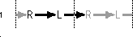
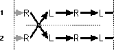
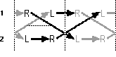
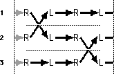

I've been juggling seriously since the summer of 1979, when I saw a performance of
the Pickle Family Circus in a park one gorgeous Saturday afternoon. I already knew
how to juggle three balls -- shakily -- but that was the day Ireally discovered
juggling. I had never seen clubs juggled up close and in person before (clubs are those
bowling pin-like things that are thrownspinning end over end through the air), and in
particular I had never seen jugglers throw things back and forth between each other
(calledpassing ). The Pickle Family did lots of both.
I was stunned. I was bowled over. I was frozen in myseat, gaping and incredulous. I
couldn't believe that what I was seeing was possible. Ihad to learn how to do that.
Fortuitously, the circus offered workshops in various circus arts, including juggling,
so I immediately signed up. The following morning, I learned the basics of passing
balls, forced my roommate to learn to juggle three balls so that I'd have someone to try
it out with,and embarked on a long and fruitful juggling binge. Thefire that was lit that
day burned white hot for over fiveyears, and will remain fitfully smoldering as long as
I canstill lift my arms, close my fingers, and count to 3.
My favorite kind of juggling nowadays is getting together with other jugglers and
passing clubs. We arrange ourselves in various formations about the floor, start
juggling all together, and throw the juggling clubs back and forth in varied and
complex -- but mostly predetermined -- ways.
Which brings me to the main topic of this column: how multiperson juggling patterns
work, and one way to write them down on paper. I'm going dangerouslyfar out on a limb
here, assuming that it will be interestingto you, even though it has precious little to do
with programming computers, and even though you're probably not a juggler. This
particular limb is propped up a little by the very high proportion of computer people,
mathematicians, engineers, and other scientists among jugglers. (There have been
long-winded and unresolved discussions about why this should be so, but whatever the
reason, it's a fact.) It's also been my observation (at Apple at our weekly juggle, and at
the Worldwide Developers Conference) that computer people, in their endearing
analytical way, often stand around for a long time trying to figure out the patterns.
Once you understand the rules of how the objects interleave and the jugglers
interconnect, you can search for new patterns on paper, whether or not you know how
to juggle. It's like a puzzle, or like a mathematical game. It's even conceivable (though
just barely) that a knowledge of juggling patterns could be useful to you. I saw a
citation on the rec.juggling newsgroup a while back for a paper called "Juggling
Networks," published in the proceedings of a conference on parallel and distributed
computing. From the abstract:
. . . these constructions are based on a metaphor involving teams of jugglers whose
throwing, catching, and passing patterns result in intricate permutations of the balls.
This metaphor affords a convenient visualization of time-division-multiplex
activities that should be of value in devising networks for a variety of switching tasks.
There have been several mathematical papers that deal with juggling in one way or
another, and even so eminent a personage as Claude Shannon, the father of information
theory, was an amateur juggler and was interested in the permutations and
combinations in juggling patterns. He wrote a paper called "The Scientific Aspects of
Juggling," and I heard that when he appeared at a juggling convention he drew
thunderous applause from the assembled jugglers (another indication of how many
jugglers are science types).
Club passing is by far my favorite kind of juggling. The jollies I get from it are all
over the map; it's deeply satisfying for me on many, many levels. Part of it is social,
of course. Like sex, it's just more fun with others. And a big part of it is the
cooperation, being a part of this complicated group pattern that's built and maintained
by everyone together. I suspect it's a lot like jamming with a band in that sense: we all
agree on a framework -- 12-bar blues in E or a seven-club four-count with triples,
as the case may be -- and then go for it, the members either struggling to keep up or
embellishing wildly, according to their level of skill. Sometimes we'll hit a "groove," a
day and a pattern and a distribution of people that just feels right, the beat solid, the
hands sure of their grip.
Club passing can feel like being part of some giant, whirling, clockwork contraption,
with everything ticking and clacking along. Talk about being a cog in the machine! The
spinning clubs form this sort of living, writhing, flying tangle with its own weird
existence, a kind of "energy net" connecting the jugglers involved. The old saw "what
goes around comes around" has a particularly pointed truth in club passing: if one
juggler throws a pass badly -- say without quite enough spin, or a little off target --
it causes the receiving juggler some, well, discomfort. That discomfort often manifests
itself in another bad pass, causing the next receiver to struggle, and so on. It's often
actually visible; you can see the disturbance making the rounds, until it either gets
smoothed out by jugglers who manage to keep their cool, or amplifies itself so badly
that the whole pattern comes crashing down around the jugglers' heads. (Interestingly,
the disturbance often travels independently of the clubs themselves, in a different
direction or at a different speed, like a wave passing through water.) And passing clubs
fosters --requires , actually -- a sort of heightened awareness of the other people
involved. Often a quick, nearly imperceptible motion on the part of one juggler, a tiny
hesitation, or the beginning of a wrong throw, corrected almost before it happens,
causes another juggler to react reflexively. Typically both burst out laughing, mostly
because it's unbelievable that such a tiny signal is transmitted at all.
And then there's the patterns game: a significant portion of the time spent "juggling" is
really spent standing around, fiddling with the clubs, and trying to come up with new
formations, new ways to arrange ourselves and the clubs in space and time so that
everything fits together. The landscape of possible patterns is vast and complex, but
also highly structured in mysterious ways. As in other iterative systems (computers
and economies spring to mind), the underlying rules are relatively simple but the
results can be very complex and widely variable. It's a kind of combinatorics and is, I
think, actually covered by the mathematics of group theory.
I wrote a computer program that implements one particular kind of juggling notation,
introduced to me by a juggler named Martin Frost and known ascausal diagramming .
This notation can be handy for doodling around trying to find new multiperson passing
patterns. (Actually, Istarted writing the program. It's still rickety and unfinished, and
will probably always remain so -- it was more an experiment in QuickDraw GX
programming than anything else. Nevertheless, it's included on this issue's CD, for
your edification and/or derision.) The program implements a kind of active graph
paper, allowing you to draw only "legal" throws, and constraining your diagrams in
appropriate ways (such as preventing you from drawing throws that go back in time,
for a start).
Figure 1 shows the diagram for a juggler doing a basic three-object pattern (called
acascade ), and will serve to show both how the notation works and how juggling
works. First the diagram: Time marches off inexorably to the right, divided into nice,
even steps (calledcounts ). A juggler is represented through time as a row of Ls and
Rs, representing the juggler's left and right hands, alternately throwing things. A
thrown object is represented by an arrow from the hand that throws it to the hand that
catches it. The pattern wraps around at the dotted lines, and repeats endlessly -- or
until someone drops something. (The program always shows two repeating cycles like
this, with the repeated parts "faded.") Note that the arrows (throws) form an
unbroken line traveling through time from left to right, and that each hand has exactly
one "input" and one "output."

Figure 1. A three-object juggle
Contrary to what you might think at first glance, the overall path the arrows make
doesn't directly trace the path of an individual club. If it did, this would just be a
diagram of throwing one club back and forth between two hands. (That's a necessary
prerequisite to juggling, but is definitely not juggling.) Instead, each throwdisplaces
a club that is always assumed to be held, waiting,in the receiving hand. Think of the
juggler as holding a club in each hand, while the third is in the air. The incoming club
displaces the club that's already there, forcing the juggler to throw it elsewhere. In a
cascade, the displaced club is thrown back to the opposite hand, where it in turn
displaces the club that's there, which goes back to the first hand, displacing the club
that's there, and so on, ad infinitum. (Note that although I'm saying "club" here, all
these principles apply equally well to balls or rings or rubber chickens.) So the chain
of throws is really a conceptual one, not a material one; it's a chain of cause and effect
through time.
Figure 2 shows two jugglers passing with each other (the repeated cycle was cropped
for space reasons). Note that they juggle in time with each other, like musicians
keeping a beat. (When juggling with clubs, you actuallyhear the beat, when the clubs
slap into the jugglers' hands.) Both jugglers throw a club to each other at the same
time, both from the right hand (though it could just as well be the left). Throwing a
club to another juggler "breaks" the juggler's continuous line of throws, but the other
juggler's club arrives in the nick of time, knitting the pattern back together. This is
a requirement: any club thrown to another juggler must be replaced by an incoming
one. Otherwise, juggling can't continue; the juggler just stops, a club in each hand,
waiting. (Actually, there are common situations that force a juggler to "stall" like that
for a count or two, but we'll limit ourselves to the nonstalling patterns here.)

Figure 2. A four-count
Because of the close timing, both jugglers must agree on the pattern before starting.
The pattern in Figure 2 is called afour-count because there's a pass every four counts.
(Another name for this pattern is every other , referring to the fact that every other
right-hand throw is a pass.) The four-count is a very common pattern, and for most
club jugglers this is the default, "idling" pattern. Since there's so much time between
passes, it's possible to do lots of fancy free-form tricks (affectionately known as
"throwing trash") in the midst of the pattern. Of course, "so much time" isn't really
much time at all: a club juggle is roughly 160 counts per minute, so there's just over
a second between the passes in a four-count.
These diagrams show nothing about spatial relationships,by the way. The usual
situation has the jugglers facing each other 6 or 8 feet apart, but the same patterns
can be done standing side by side, back to back, or even with one juggler standing on
the other's shoulders. These diagrams show only the "connectedness" of the pattern
through time, and in fact you can draw patterns that work fine on paper but are
difficult to actually do because of mid-air collisions.
Figure 3 shows another pattern that demonstrates some other important concepts. In
this case, every right-hand throw is a pass (which makes this pattern atwo-count ).
Although the jugglers are juggling to the same beat, note that they are out of sync; one
juggler's right-hand throw is simultaneous with the other's left. Note also that each
pass spends twice as long -- two counts -- in the air. In all the previous diagrams,
the throws have beensingles , meaning that the club spins around once during transit.
The passes in Figure 3 aredoubles; since they're in the air twice as long, they have
time to spin around twice before being caught. (The left-hand "self" throws are still
singles.)

Figure 3. A two-count with right-handed doubles
A warning about these multiple-spin throws: It's tempting, on paper, to make heavy
use of long arrows (throws that spend lots of time in the air between jugglers). A
little physics tells you, though, that the time in the air is proportional to the height of
the throwsquared . So a double needs to be thrown four times the height of a single, and
a triple must thrown nine times higher. A quadruple -- a "quad" -- must besixteen
times the height of a single, and that's about as far as you can reasonably go with any
sort of accuracy (or safety!). I generally stop at triples.
Now take a look at Figure 4 (again, cropped for space). This shows a three-person
pattern called afeed . In this case one person (juggler 2) acts as the feeder and the
others are feedees . The feeder is passing twice as often as the feedees; the feeder is
doing a two-count, while the feedees are each doing a four-count, interleaved with each
other in time. The feeder switches back and forth between the two feedees. This is
another very common pattern, and can be added to indefinitely: Juggler 3 could pass
with a new juggler, juggler 4, on the first count, at the same time jugglers 1 and 2
are exchanging clubs. That makes juggler 3 a feeder as well, feeding 2 and 4.

Figure 4. A feed
I think by now you can see how the patterns fit together. It's like building a network,
where everything has to eventually connect up and balance out. Go ahead, give it a try.
A favorite pattern of mine is a three-count, with a pass every third count; both left
and right hands pass. How about a feed where the feedees do three-counts? How many
three-count feedees can one feeder possibly handle? Try a ten-club feed (the feeder
does two-count doubles, as in Figure 3, and the feedees each do four- count doubles).
Admire the attractive and tidy braids that result. Go wild. There are some interesting
and nonobvious things about this notation that are probably worth pointing out. You
can tell how many clubs there are in a pattern by taking a vertical slice through the
diagram anywhere, counting the throws you intersect, and adding two clubs per
juggler. (Note that Figure 3 is a seven-club pattern!) Also, if you start anywhere and
follow the line of arrows around, wrapping back at the first dotted line, they always
form closed paths, eventually arriving back where they began. Some patterns form one
long continuous cycle; they're knit from a single strand, like a sweater. All the
examples here are like that. Other patterns form distinct "orbits," where there are
two or more strands making up the pattern; the three-count is an example. Each
strand is an independent line of cause and effect, really an independent subpattern, that
has no effect on the other parts of the pattern. You can actually decompose such
patterns into their constituent parts, and juggle just one strand of the pattern at a
time.
Also, the fate of any particular club isn't obvious at all in these diagrams. You can
trace it, if you like -- a club leaves a hand two counts after it arrives -- but it's a bit
of a pain (hmm, that might make a good addition to the program). Of course, tracing
the paths of individual clubs isn't of primary interest to jugglers (though it's fun
sometimes), in the same way that the path of an individual dollar is rarely of interest
to economists and the trials and tribulations of an individual electron don't concern
circuit designers. In contrast, I'd bet that the paths of the individual clubs are ofgreat
interest to the folks who wrote the network paper cited earlier. This notation would
probably be a poor choice for them.
Finally, of course, theexperience of juggling is nowhere to be found in these diagrams.
In contrast to their clean, orderly lines, passing clubs is a very physical thing, full of
grimacing effort, plagued with fumbling and mistakes, and occasionally
bone-whackingly painful. It's more like chopping wood than like doing math; it's more
like pounding nails than like tying macramÉ, despite the nice braided look of the
diagrams. But when things get cooking, when everyone is warmed up and throwing
well, when the pattern grows and takes shape between our hands and fills the air with
intricate, swirling, impossible motion, there's nothing else quite like it in the world.
RECOMMENDED READING
DAVE JOHNSON first met his wife, Lisa, in a stage combat class, learning to
swashbuckle in dramatic fashion. Dave took fencing in college for a couple of years,
always secretly wishing there were more yelling, ducking, slashing, and diving,
instead of the tightly controlled, linear, minimalist motions of good foil fencing. Then
he discovered the world of stage combat, and he's never gone back. He and Lisa are
currently enrolled in a new class: Elizabethan Swordplay, using rapier and dagger. En
garde! *
Thanks to Lorraine Anderson, Jeff Barbose, Martin Frost, Bo3b Johnson, Lisa
Jongewaard, and Ned van Alstyne for their enlightening review comments.*
Dave welcomes feedback on his musings. He can be reached at JOHNSON.DK on
AppleLink, dkj@apple.com on the Internet, or 75300,715 on CompuServe.*